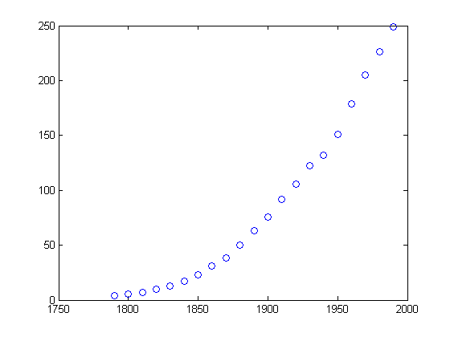
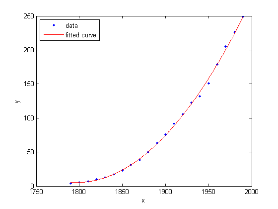
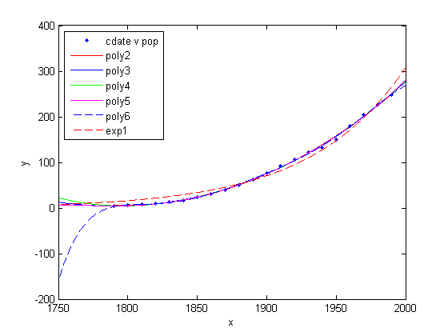
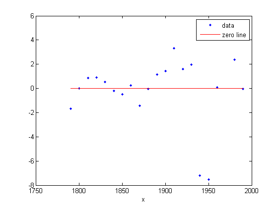
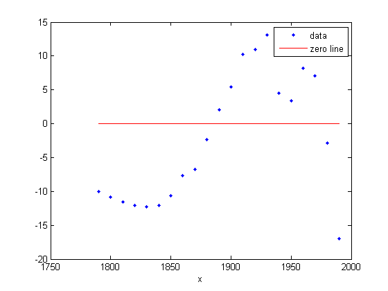
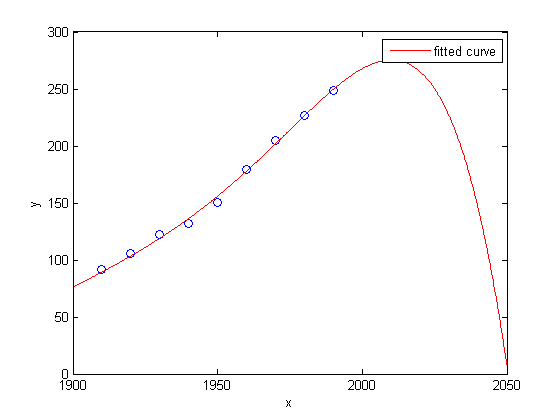
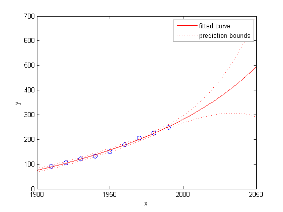
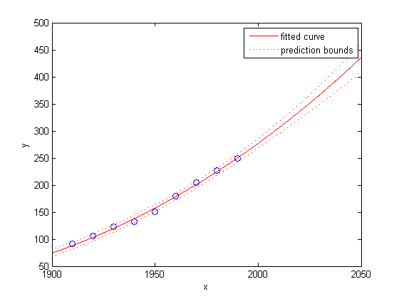
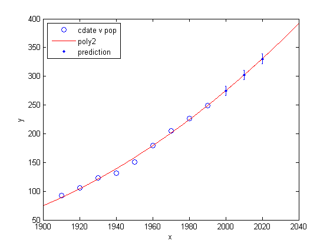

Polynomial Curve Fitting
This example shows how to fit polynomials up to sixth degree to some census data using Curve Fitting Toolbox™. It also shows how to fit a single-term exponential equation and compare this to the polynomial models.
The steps show how to:
- Load data and create fits using different library models.
- Search for the best fit by comparing graphical fit results, and by comparing numerical fit results including the fitted coefficients and goodness of fit statistics.
Contents
- Load and Plot the Data
- Create and Plot a Quadratic
- Create and Plot a Selection of Polynomials
- Plot the Residuals to Evaluate the Fit
- Examine Fits Beyond the Data Range
- Plot Prediction Intervals
- Examine Goodness-of-Fit Statistics
- Compare the Coefficients and Confidence Bounds to Determine the Best Fit
- Evaluate the Best Fit at New Query Points
Load and Plot the Data
The data for this example is the file census.mat
load census
The workspace contains two new variables:
- cdate is a column vector containing the years 1790 to 1990 in 10-year increments.
- pop is a column vector with the U.S. population figures that correspond to the years in cdate .
whos cdate pop plot( cdate, pop, 'o' )
Name Size Bytes Class Attributes cdate 21x1 168 double pop 21x1 168 double
Create and Plot a Quadratic
Use the fit function to fit a a polynomial to data. You specify a quadratic, or second-degree polynomial, with the string 'poly2'. The first output from fit is the polynomial, and the second output, gof, contains the goodness of fit statistics you will examine in a later step.
[population2, gof] = fit( cdate, pop, 'poly2' );
To plot the fit, use the plot method.
plot( population2, cdate, pop ); % Move the legend to the top left corner. legend( 'Location', 'NorthWest' );
Create and Plot a Selection of Polynomials
To fit polynomials of different degrees, change the fittype string, e.g., for a cubic or third-degree polynomial use 'poly3'. The scale of the input, cdate, is quite large, so you can obtain better results by centering and scaling the data. To do this, use the 'Normalize' option.
population3 = fit( cdate, pop, 'poly3', 'Normalize', 'on' ); population4 = fit( cdate, pop, 'poly4', 'Normalize', 'on' ); population5 = fit( cdate, pop, 'poly5', 'Normalize', 'on' ); population6 = fit( cdate, pop, 'poly6', 'Normalize', 'on' );
A simple model for population growth tells us that an exponential equation should fit this census data well. To fit a single term exponential model, use 'exp1' as the fittype.
populationExp = fit( cdate, pop, 'exp1' );
Plot all the fits at once, and add a meaningful legend in the top left corner of the plot.
hold on plot( population3, 'b' ); plot( population4, 'g' ); plot( population5, 'm' ); plot( population6, 'b--' ); plot( populationExp, 'r--' ); hold off legend( 'cdate v pop', 'poly2', 'poly3', 'poly4', 'poly5', 'poly6', 'exp1', ... 'Location', 'NorthWest' );
Plot the Residuals to Evaluate the Fit
To plot residuals, specify 'residuals' as the plot type in the plot method.
plot( population2, cdate, pop, 'residuals' );
 The fits and residuals for the polynomial equations are all similar, making it difficult to choose the best one.
If the residuals display a systematic pattern, it is a clear sign that the model fits the data poorly.
plot( populationExp, cdate, pop, 'residuals' );
 The fit and residuals for the single-term exponential equation indicate it is a poor fit overall. Therefore, it is a poor choice and you can remove the exponential fit from the candidates for best fit.
Examine Fits Beyond the Data Range
Examine the behavior of the fits up to the year 2050. The goal of fitting the census data is to extrapolate the best fit to predict future population values.
By default, the fit is plotted over the range of the data. To plot a fit over a different range, set the x-limits of the axes before plotting the fit. For example, to see values extrapolated from the fit, set the upper x-limit to 2050.
plot( cdate, pop, 'o' ); xlim( [1900, 2050] ); hold on plot( population6 ); hold off
Examine the plot. The behavior of the sixth-degree polynomial fit beyond the data range makes it a poor choice for extrapolation and you can reject this fit.
Plot Prediction Intervals
To plot prediction intervals, use 'predobs' or 'predfun' as the plot type. For example, to see the prediction bounds for the fifth-degree polynomial for a new observation up to year 2050:
plot( cdate, pop, 'o' ); xlim( [1900, 2050] ) hold on plot( population5, 'predobs' ); hold off
Plot prediction intervals for the cubic polynomial up to year 2050:
plot( cdate, pop, 'o' ); xlim( [1900, 2050] ) hold on plot( population3, 'predobs' ) hold off
Examine Goodness-of-Fit Statistics
The struct gof shows the goodness-of-fit statistics for the 'poly2' fit. When you created the 'poly2' fit with the fit function in an earlier step, you specified the gof output argument.
gof
gof =
sse: 159.0293
rsquare: 0.9987
dfe: 18
adjrsquare: 0.9986
rmse: 2.9724
Examine the sum of squares due to error (SSE) and the adjusted R-square statistics to help determine the best fit. The SSE statistic is the least-squares error of the fit, with a value closer to zero indicating a better fit. The adjusted R-square statistic is generally the best indicator of the fit quality when you add additional coefficients to your model.
The large SSE for 'exp1' indicates it is a poor fit, which you already determined by examining the fit and residuals. The lowest SSE value is associated with 'poly6'. However, the behavior of this fit beyond the data range makes it a poor choice for extrapolation, so you already rejected this fit by examining the plots with new axis limits.
The next best SSE value is associated with the fifth-degree polynomial fit, 'poly5', suggesting it might be the best fit. However, the SSE and adjusted R-square values for the remaining polynomial fits are all very close to each other. Which one should you choose?
Compare the Coefficients and Confidence Bounds to Determine the Best Fit
Resolve the best fit issue by examining the coefficients and confidence bounds for the remaining fits: the fifth-degree polynomial and the quadratic.
Examine population2 and population5 by displaying the models, the fitted coefficients, and the confidence bounds for the fitted coefficients:
population2
population2 =
Linear model Poly2:
population2(x) = p1*x^2 + p2*x + p3
Coefficients (with 95% confidence bounds):
p1 = 0.006541 (0.006124, 0.006958)
p2 = -23.51 (-25.09, -21.93)
p3 = 2.113e+04 (1.964e+04, 2.262e+04)
population5
population5 =
Linear model Poly5:
population5(x) = p1*x^5 + p2*x^4 + p3*x^3 + p4*x^2 + p5*x + p6
where x is normalized by mean 1890 and std 62.05
Coefficients (with 95% confidence bounds):
p1 = 0.5877 (-2.305, 3.48)
p2 = 0.7047 (-1.684, 3.094)
p3 = -0.9193 (-10.19, 8.356)
p4 = 23.47 (17.42, 29.52)
p5 = 74.97 (68.37, 81.57)
p6 = 62.23 (59.51, 64.95)
You can also get the confidence intervals by using confint :
ci = confint( population5 )
ci =
-2.3046 -1.6841 -10.1943 17.4213 68.3655 59.5102
3.4801 3.0936 8.3558 29.5199 81.5696 64.9469
The confidence bounds on the coefficients determine their accuracy. Check the fit equations (e.g. f(x)=p1*x+p2*x... ) to see the model terms for each coefficient. Note that p2 refers to the p2*x term in 'poly2' and the p2*x^4 term in 'poly5'. Do not compare normalized coefficients directly with non-normalized coefficients.
The bounds cross zero on the p1, p2, and p3 coefficients for the fifth-degree polynomial. This means you cannot be sure that these coefficients differ from zero. If the higher order model terms may have coefficients of zero, they are not helping with the fit, which suggests that this model over fits the census data.
The fitted coefficients associated with the constant, linear, and quadratic terms are nearly identical for each normalized polynomial equation. However, as the polynomial degree increases, the coefficient bounds associated with the higher degree terms cross zero, which suggests over fitting.
However, the small confidence bounds do not cross zero on p1, p2, and p3 for the quadratic fit, indicating that the fitted coefficients are known fairly accurately.
Therefore, after examining both the graphical and numerical fit results, you should select the quadratic population2 as the best fit to extrapolate the census data.
Evaluate the Best Fit at New Query Points
Now you have selected the best fit, population2, for extrapolating this census data, evaluate the fit for some new query points:
cdateFuture = (2000:10:2020).'; popFuture = population2( cdateFuture )
popFuture = 274.6221 301.8240 330.3341
To compute 95% confidence bounds on the prediction for the population in the future, use the predint method:
ci = predint( population2, cdateFuture, 0.95, 'observation' )
ci = 266.9185 282.3257 293.5673 310.0807 321.3979 339.2702
Plot the predicted future population, with confidence intervals, against the fit and data.
plot( cdate, pop, 'o' ); xlim( [1900, 2040] ) hold on plot( population2 ) h = errorbar( cdateFuture, popFuture, popFuture-ci(:,1), ci(:,2)-popFuture, '.' ); hold off legend( 'cdate v pop', 'poly2', 'prediction', ... 'Location', 'NorthWest' )